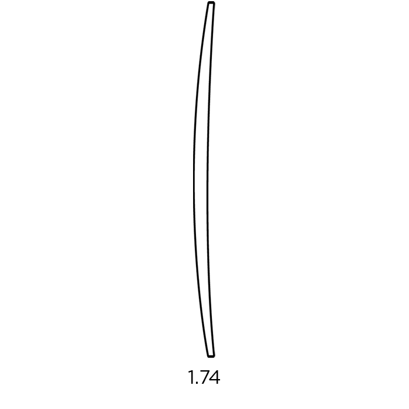

A Guide to High Index Lenses
High index lenses are a type of optical lens that you can choose to
have for your glasses. They are lighter and thinner than a standard
glasses lens and have many benefits, especially for those with a
higher prescription.
We have a range of high index lenses available at Oscar Wylee. Keep
reading to find out more on these lenses and how to pick the ones
that are right for you.
Polarising with Oscar Wylee
Interested in polarising your glasses? Simply walk into any Oscar
Wylee store and our friendly staff will be there to assist you with
any enquiry on our products, as well as any possible add-on
services.
Please be aware that polarised lens enhancements are not suitable
for nylon frames and may on occasions be thicker than clear lenses.
Oscar Wylee polarised lenses are available in grey, brown or green
colours.
Are you looking for a new pair of glasses?
Find your nearest Oscar Wylee store and our staff can find your
ideal frames.
The Lens Index
To fully comprehend what a high index lens is, it is best to first
gain some understanding of what we mean by lens index. A lens index
is a group of numbers or values that refers to the ability of a lens
to refract light. As light passes through a lens, the lens will
refract or bend this light, allowing your eyes to focus clearly.
Generally, the higher the lens index value, the thinner and lighter
a lens will be. At Oscar Wylee we provide several indexes for your
lenses. The prescription recommendations and lens thicknesses in
this article are a general guide. It is advised that you talk to an
optometrist or our in-store dispensing staff before buying high
index lenses.
High index lenses are available for most lens types, including
single vision lenses, bifocal lenses and multifocal lenses, also
known as
progressive lenses.
1.5 Index Lens
Our standard, entry level lens at Oscar Wylee.
Recommended for prescriptions up to +/- 2.
1.6 Mid Index Lens
35% lighter and thinner than the 1.5 standard lens.
Recommended for prescriptions up to +/- 3.
1.67 Index Lens
A lightweight lens. 50% thinner and lighter than the
standard.
Recommended for prescriptions up to +/- 4
1.74 Index Lens
The thinnest lens we offer. It is 60% lighter and thinner
than the standard.
Ideal for all prescriptions, but recommended for +/- 4 and
above.

The difference between normal lenses and high index lenses.
The difference between normal optical lenses and high index lenses
lie in how they are made and how they refract light. Normal lenses,
those that sit in the standard range, are often made with plastic
and will refract light to help correct vision issues such as
nearsightedness (myopia), farsightedness (hyperopia) and
astigmatism.
High index lenses work in the same way. However, they are made with
a different type of material, often a special, more dense, plastic,
that refracts light more efficiently. This means they do not need as
much material to do the same job as normal optical lenses.
Source: Optometrists Network
Polycarbonate lenses vs high index lenses
Polycarbonate is a type of strong, high impact resistant plastic
that can be used as a glasses lens. Due to their durability,
polycarbonate lenses are often used in children’s glasses, for those
who play sports, or engage in other activities where glasses may be
prone to breakage.
Polycarbonate is generally not used for high index lenses as,
although they are impact resistant and durable, they do not provide
as much visual clarity as other materials.
Are all high index lenses aspheric?
When talking about lenses, the term aspheric refers to the profile
of the lens, whereas high index refers generally to the thickness.
An aspheric lens will have a flatter profile than normal optical
lenses, or, in other words, they will not be as spherical. Aspheric
lenses will help to reduce eye distortion.
At Oscar Wylee, our high index lenses are also aspheric. Together, a
lens that is both high index and aspheric will be thinner and
flatter, often more aesthetically pleasing and more comfortable for
those with a stronger prescription.
The advantages of high index lenses
When it comes to choosing a high index lens for your glasses, it is
good to know what the advantages are, especially compared to normal
optical lenses. The advantages include the following:
-
Lighter and thinner - High index lenses are lighter and
thinner than normal optical glasses, making for a more comfortable
wear.
-
Clearer, sharper vision - Light has less area to travel
through with a high index lens, meaning less distortion and
clearer vision.
-
Aesthetics - High index lenses reduce the magnification and
minification of the eyes, meaning you won’t have that bug eyed
look some thicker, stronger lenses can produce.
Find an optometrist near me
Book an eye test with a qualified optometrist near you.
Disadvantages of high index lenses
Whilst high index lenses may have advantages, especially for those
with a high prescription, they also have disadvantages, including
the following.
- They can be scratch prone.
- High index lenses may be more expensive than normal lenses.
- They may also be brittle and more prone to breakage.
-
High index lenses can be more reflective of light, which may make
them harder to use during brightly lit work.
How much do high index lenses cost?
As high index lenses are made with a special material, they often
have a higher cost than normal optical lenses. At Oscar Wylee, our
high index lenses are priced individually, according to thickness.
You can pick which index you would like when ordering your glasses
online or you can come into your nearest Oscar Wylee store and our
friendly staff will make sure you get the lens that is right for
you.
In addition to high index lenses, we also have a range of other
lenses available at Oscar Wylee, from photochromic lenses to
prism glasses
lenses.
Do I need high index lenses?
If you have a strong prescription and believe you may benefit from
high index lenses, come into one of our stores and our friendly
staff will discuss the options available to you.
If you do not have an existing prescription but think you may need
glasses,
book an eye test
with our optometrists for a comprehensive evaluation of your eye
health.
Find a store near you
Contact or visit your nearest store to have your eyes tested.


Need to have your eyesight checked?
Oscar Wylee offers bulk billed eye tests, so there are no
out-of-pocket expenses for eligible Medicare cardholders.